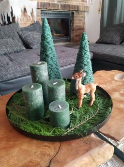
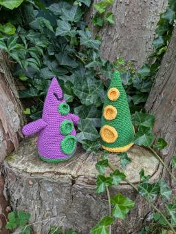
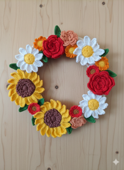
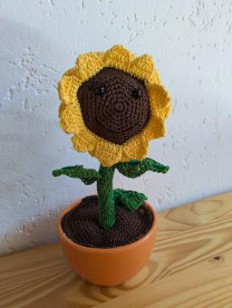

Shop - Anleitungen

Ein kleines Brautpaar aus Garn. gemacht für den Moment, in dem aus zwei Wir wird.
3,50 €

An einem kalten Wintertag entsteht hier Masche für Masche ein fröhlicher Schneemann. Mit seinem freundlichen Lächeln und seinem runden Körper bringt er Wärme in die kalte Jahreszeit. Ob als Dekoration, Geschenk oder kleiner Begleiter – dieser Schneemann soll Freude schenken und zum Verweilen einladen.
3,50 €

Theo, der Teddybär, ist zwar nicht besonders groß, aber gerade das macht ihn so liebenswert. Theo liebt es mit Blauklötzen zu spielen oder zu kuscheln. Theo ist nicht gerne alleine, aber wenn er Gesellschaft haben will, dann sagt er einfach seinen anderen Bären Freunden Bescheid. Zusammen sind sie eine tolle Truppe und lassen sich immer etwas schönes einfallen. Höhe ca. 13 cm.
2,50 €

Teddy Jens Jr. ist Feuerwehrmann aus Leidenschaft. Er kennt sich bestens aus mit Sicherheit und ist stets zur Stelle, wenn es brennt oder wenn jemand Hilfe braucht. Dabei liebt er es, selbst die größten Lagerfeuer zu machen, um sich dann mit seinen Freunden daran zu erfreuen. Aber natürlich nur, wenn die nötigen Sicherheitsvorschriften eingehalten werden.
3,50 €

Frisch geschlüpfte Baby Drachen gibt es in vielen verschiedenen Farben. Aber eines haben sie alle gemeinsam: wie alle kleinen Babys müssen sie noch sehr viel schlafen. Dabei kuscheln sie sich gerne ganz fest aneinander. So haben sie es immer schön kuschelig und warm. Wenn man ganz leise ist, kann man sie ab und zu ganz leicht schnarchen hören. Und manchmal kommen dabei auch kleine Funken aus ihren Nüstern
2,50 €

Kuscheln, Fühlen und Lernen ist für die Kleinsten das Größte, um so spielerisch die Welt zu entdecken. Die Greifringe sehen nicht nur niedlich aus, sondern begeistern auch schon die ganz Kleinen, durch verschiedene Formen, Färben und Materialien. Außerdem sind sie eine wunderschöne Geschenkidee zur Geburt. Durchmesser Greifring 8 cm.
3,50 €

Dieser Unterwasser Angelspaß ist bestens geeignet für Kinder ab zwei Jahren. Es macht den Kleinen nicht nur Spaß, die bunten Tintenfische zu angeln, es fördert auch die Feinmotorik und die Hand-Augen-Koordination. Das perfekte Geschenk für kleine Angler.
3,50 €

Die Anleitung für das Memoryspiel ist mit vielen Bildern und Erklärungen leicht verständlich. Farbmemory ist ein tolles Spiel für Kinder ab 2 Jahren. Sie können so spielerisch die Farben kennenlernen und das Material läd zum fühlen und erforschen ein. In der großen Blume kann dann alles praktisch verstaut werden, so dass nichts verloren gehen kann.
4,00 €

Tuchpuppen sind etwas wundervolles für Babys und Kleinkinder. Zum Kuscheln und Liebhaben sind sie einfach wunderbare Geschenke. Und selbstgehäkelt sind sie etwas ganz Besonderes. Größe ca. 22 cm.
3,50 €

Bei diesem Murmel Sortier Spiel können Murmeln in die dazugehörigen Schälchen sortiert werden. Dabei werden nicht nur die Farben gelernt, sondern auch schon einfaches Zählen, da die Schälchen verschieden groß sind und es jeweils eine unterschiedliche Anzahl von Murmeln gibt.
2,50 €

Diese zwei Wandaufhänger sind perfekt, um kleine Erinnerungen in Szene zu setzen. Egal, ob Postkarten, Schnullerband oder kleine Geschenke zur Geburt. Ein echter Hingucker in jedem Kinderzimmer.
2,50 €

Dieses klassische Babyspielzeug ist einfach immer toll als Geschenk zur Geburt oder für Babys. Selbstgehäkelt sind sie wirklich immer etwas Besonderes. Größe ca. 12x12x12 cm. Farbwünsche und Personalisierung möglich.
2,50 €

Diese kleinen handgehäkelten Hasen bringen den Frühling direkt zu dir nach Hause! Ob am Osterstrauch, als dekorativer Akzent an einem Weidenzweig oder als liebevoller Geschenkanhänger. Die charmanten Gesichter und die liebevollen Details sorgen garantiert für ein Lächeln.
1,00 €

Mit diesem niedlichen Weihnachtszug kommt die Weihnachtsstimmung mit Volldampf angerast. Mit vielen liebevollen Details sollte diese Weihnachtsdeko bei keinem Weihnachtsliebhaber fehlen. Größe ca. H20xB35xT9 cm.
5,50 €


Mit diesem wunderschönen, gehäkelten Wichtelhaus, kommt gleich Weihnachtsstimmung auf. Und auch beim Häkeln wächst schon die Vorfreude auf Weihnachten. Höhe ca, 26 cm.
5,00 €

Ein Lebkuchenmännchen gehört in die Weihnachtszeit einfach dazu. Dieser besteht allerdings nicht wie seine Verwandten aus Teig, sondern aus Wolle. Was seine Lebenserwartung ungemein verlängert! Größe ca. 19 cm.
3,50 €

Diese tollen Tannenbäume sind super einfach zu häkeln und man kann damit in der Weihnachtszeit wirklich tolle Deko zaubern. Anleitung mit vielen Bildern und für Anfänger geeignet. Anleitung für drei verschiedene Größen.
2,50 €

Grün-Tentakel und Purpur-Tentakel sind zwei friedliebende Wesen. Als aber eines Tages Purpur-Tentakel versehentlich aus einem Fluss mit giftigem Abwasser trinkt, wachsen ihm plötzlich Arme. Das Ganze steigt ihm so zu Kopf, dass er denkt, er könnte jetzt die Weltherrschaft an sich reißen. Ob Grün-Tentakel ihn wohl aufhalten kann?
3,50 €

Hol dir den Frühling ins Haus mit diesem kunterbunten Häkel-Blumenkranz!
Bringe mit diesem farbenfrohen Blumenkranz dauerhafte Frische in dein Zuhause! Ob als fröhlicher Türgruß oder als dekorativer Blickfang an der Wand - dieser Kranz aus handgehäkelten Sonnenblumen, Rosen und Margeriten versprüht sofort gute Laune.
4,50 €

Diese Sonnenblume ist ein perfektes Geschenk, um jemanden eine kleine Freude zu machen. Sie braucht kein Wasser und macht einfach nur gute Laune. Wer möchte, kann noch einen kleinen personalisierten Spruch anbringen. Das wertet das Ganze dann noch zusätzlich auf.
3,50 €

Schluss mit hässlichen Plastikverpackungen in der Tasche! Meine handgehäkelten Taschentuchtaschen bringen Farbe in den Alltag. Das wunderschöne Farbverlaufsgarn macht jede Tasche zu einem einzigartigen Unikat.
2,00 €

Dieser niedliche, handgefertigte Couchorganizer in Form eines Hundes ist nicht nur ein praktisches Accessoire, sondern auch ein liebenswerter Begleiter für dein Wohnzimmer! Perfekt geeignet, um Fernbedienungen, Bücher, Brillen und andere kleine Alltagsgegenstände ordentlich zu verstauen und immer griffbereit zu haben. Mit seiner charmanten, verspielten Optik bringt der Organiser nicht nur Funktionalität, sondern auch eine extra Portion Gemütlichkeit in dein Zuhause.
3,50 €
Du hast Interesse an einem der Artikel? Schreib mich einfach an unter: tina.mona.jung+tku@gmail.com